library(tidyverse)
library(cowplot)
library(patchwork)6 Inferring a Binomial Probability via Exact Mathematical Analysis
This chapter presents an example of how to do Bayesian inference using pure analytical mathematics without any approximations. Ultimately, we will not use the pure analytical approach for complex applications, but this chapter is important for two reasons. First, the relatively simple mathematics in this chapter nicely reveal the underlying concepts of Bayesian inference on a continuous parameter. The simple formulas show how the continuous allocation of credibility changes systematically as data accumulate. The examples provide an important conceptual foundation for subsequent approximation methods, because the examples give you a clear sense of what is being approximated. Second, the distributions introduced in this chapter, especially the beta distribution, will be used repeatedly in subsequent chapters. (Kruschke, 2015, p. 123, emphasis added)
6.1 The likelihood function: The Bernoulli distribution
Let’s load our primary packages.
If we denote a set of possible outcomes as \(\{y_i\}\), the Bernoulli likelihood function for a set of \(N\) trials follows the form
\[p(\{y_i\} \mid \theta) = \theta^z \cdot (1 - \theta) ^ {N - z},\]
where \(z\) is the number of 1’s in the data (i.e., heads in a series of coin flips) and the sole parameter \(\theta\) is the probability a given observation will be a 1. Otherwise put, the Bernoulli function gives us \(p(y_i = 1 \mid \theta)\).
If you follow that equation closely, here is how we might express it in R.
dbern <- function(x, z = NULL, n = NULL) {
x^z * (1 - x)^(n - z)
}We introduced the dbern() function in the last chapter, and it will come in handy in just a bit.
6.2 A description of credibilities: The beta distribution
In this chapter, we use purely mathematical analysis, with no numerical approximation, to derive the mathematical form of the posterior credibilities of parameter values. To do this, we need a mathematical description of the prior allocation of credibilities…
In principle, we could use any probability density function supported on the interval \([0, 1]\). When we intend to apply Bayes’ rule (Equation 5.7, p. 106), however, there are two desiderata for mathematical tractability. First, it would be convenient if the product of \(p(y \mid \theta)\) and \(p(\theta)\), which is in the numerator of Bayes’ rule, results in a function of the same form as \(p(\theta)\)… Second, we desire the denominator of Bayes’ rule (Equation 5.9, p. 107), namely \(\int \text d \theta\ p(y \mid \theta) p(\theta)\), to be solvable analytically. This quality also depends on how the form of the function \(p(\theta)\) relates to the form of the function \(p(y \mid \theta)\). When the forms of \(p(y \mid \theta)\) and \(p(\theta)\) combine so that the posterior distribution has the same form as the prior distribution, then \(p(\theta)\) is called a conjugate prior for \(p(y \mid \theta)\). (p. 127 emphasis in the original)
When we want a conjugate prior for \(\theta\) of the Bernoulli likelihood, the beta distribution is a handy choice. Beta has two parameters, \(a\) and \(b\) (also sometimes called \(\alpha\) and \(\beta\)), and the density is defined as
\[\begin{align*} p(\theta \mid a, b) & = \operatorname{Beta} (\theta \mid a, b) \\ & = \frac{\theta^{(a - 1)} \; (1 - \theta)^{(b - 1)}}{B(a, b)}, \end{align*}\]
where \(B(a, b)\) is a normalizing constant, keeping the results in a probability metric, and \(B(\cdot)\) is the Beta function. Kruschke then clarified that the beta distribution and the Beta function are not the same. In R, we use the beta density with the dbeta() function, whereas we use the Beta function with beta(). In this project, we’ll primarily use dbeta(). But to give a sense, notice that when given the same input for \(a\) and \(b\), the two functions return very different values.
theta <- 0.5
a <- 3
b <- 3
dbeta(theta, shape1 = a, shape2 = b)[1] 1.875beta(a = a, b = b)[1] 0.03333333The \(a\) and \(b\) parameters are also called shape parameters. And indeed, if we look at the parameters of the dbeta() function in R, we’ll see that \(a\) is called shape1 and \(b\) is called shape2.
print(dbeta)function (x, shape1, shape2, ncp = 0, log = FALSE)
{
if (missing(ncp))
.Call(C_dbeta, x, shape1, shape2, log)
else .Call(C_dnbeta, x, shape1, shape2, ncp, log)
}
<bytecode: 0x12356c578>
<environment: namespace:stats>You can learn more about the dbeta() function here. Before we make Figure 6.1, we’ll need some data.
length <- 1e2
d <- crossing(shape1 = c(0.1, 1:4),
shape2 = c(0.1, 1:4)) |>
expand_grid(x = seq(from = 0, to = 1, length.out = length)) |>
mutate(a = str_c("a==", shape1),
b = str_c("b==", shape2)) |>
mutate(density = dbeta(x, shape1 = shape1, shape2 = shape2))
head(d)# A tibble: 6 × 6
shape1 shape2 x a b density
<dbl> <dbl> <dbl> <chr> <chr> <dbl>
1 0.1 0.1 0 a==0.1 b==0.1 Inf
2 0.1 0.1 0.0101 a==0.1 b==0.1 3.20
3 0.1 0.1 0.0202 a==0.1 b==0.1 1.73
4 0.1 0.1 0.0303 a==0.1 b==0.1 1.21
5 0.1 0.1 0.0404 a==0.1 b==0.1 0.945
6 0.1 0.1 0.0505 a==0.1 b==0.1 0.781Now we’re ready for our Figure 6.1.
d |>
ggplot(aes(x = x, y = density)) +
geom_area(fill = "grey50") +
scale_x_continuous(breaks = 0:2 / 2, labels = c(0, 0.5, 1)) +
coord_cartesian(ylim = c(0, 3)) +
labs(x = expression(theta),
y = expression(p(theta*"|"*a*", "*b)),
title = "Examples of the beta distribution") +
theme(panel.grid = element_blank()) +
facet_grid(b ~ a, labeller = label_parsed)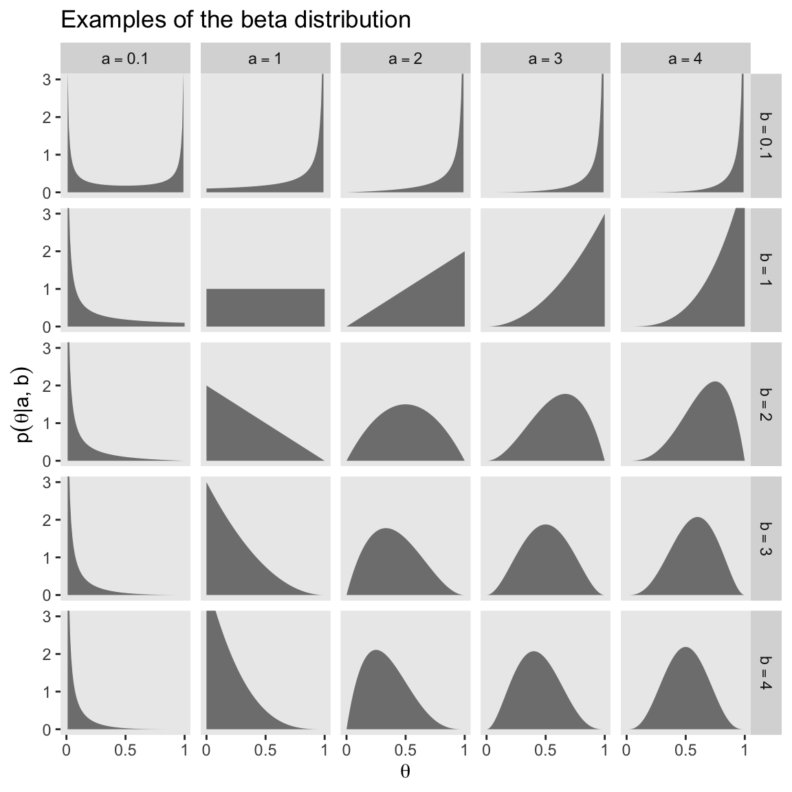
Notice that as \(a\) gets bigger (left to right across columns of Figure 6.1), the bulk of the distribution moves rightward over higher values of \(\theta\), but as \(b\) gets bigger (top to bottom across rows of Figure 6.1), the bulk of the distribution moves leftward over lower values of \(\theta\). Notice that as \(a\) and \(b\) get bigger together, the beta distribution gets narrower. (p. 127).
We have a lot of practice with the beta distribution waiting for us in the chapters to come. If you like informal tutorials, you might also check out Karin Knudson’s nice blog post, Beta distributions, Dirichlet distributions and Dirichlet processes.
6.2.1 Specifying a beta prior
Though the \(a\) and \(b\) parameters in the beta distribution might initially seem confusing, they have a nice connection to the kinds of binary coin-flipping-type data we explores with the Bernoulli distribution in the last chapter. As Kruschke wrote: “You can think of \(a\) and \(b\) in the prior as if they were previously observed data, in which there were \(a\) heads and \(b\) tails in a total of \(n = a + b\) flips” (pp. 127–128). For example, a popular default minimally-informative prior would be \(\operatorname{Beta}(1, 1)\), which is like the sum of two coin flips of one tails and one heads. That produces a uniform distribution like so:
d |>
filter(shape1 == 1 & shape2 == 1) |>
ggplot(aes(x = x, y = density)) +
geom_area(fill = "grey50") +
scale_x_continuous(expression(theta), breaks = c(0, 0.5, 1)) +
coord_cartesian(ylim = c(0, 3)) +
labs(y = expression(p(theta*"|"*a*", "*b)),
title = "Beta(1, 1)") +
theme(panel.grid = element_blank())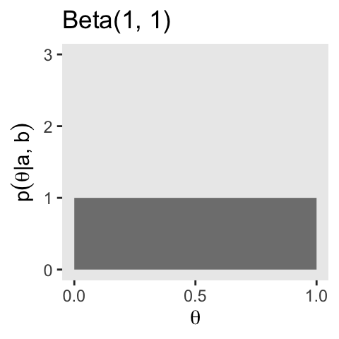
We read further:
It is useful to know the central tendency and spread of the beta distribution expressed in terms of \(a\) and \(b\). It turns out that the mean of the \(\operatorname{beta}(\theta \mid a, b)\) distribution is \(\mu = a / (a + b)\) and the mode is \(\omega = (a − 1) / (a + b − 2)\) for \(a > 1\) and \(b > 1\) (\(\mu\) is Greek letter mu and \(\omega\) is Greek letter omega). (p. 129)
In the case of our \(\operatorname{Beta}(1, 1)\), the mean is then \(1 / (1 + 1) = 0.5\) and the mode is undefined (which hopefully makes sense given the uniform distribution). Kruschke continued:
The spread of the beta distribution is related to the “concentration” \(\kappa = a + b\) (\(\kappa\) is Greek letter kappa). You can see from Figure 6.1 that as \(\kappa = a + b\) gets larger, the beta distribution gets narrower or more concentrated. (p. 129)
In the case of our \(\operatorname{Beta}(1, 1)\), the concentration is \(1 + 1 = 2\), which is also like the hypothetical sample size we’ve been using, \(n = 2\).
If we further explore Kruschke’s formulas, we learn you can specify a beta distribution in terms of \(\omega\) and \(\kappa\) by
\[\operatorname{Beta} \big (\alpha = \omega (\kappa - 2) + 1, \beta = (1 - \omega) \cdot (\kappa - 2) + 1 \big ),\]
as long as \(\kappa > 2\). Kruschke further clarified:
The value we choose for the prior \(\kappa\) can be thought of this way: It is the number of new flips of the coin that we would need to make us teeter between the new data and the prior belief about \(\mu\). If we would only need a few new flips to sway our beliefs, then our prior beliefs should be represented by a small \(\kappa\). If we would need a large number of new flips to sway us away from our prior beliefs about \(\mu\), then our prior beliefs are worth a very large \(\kappa\). (p. 129)
He went on to clarify why we might prefer the mode to the mean when discussing the central tendency of a beta distribution.
The mode can be more intuitive than the mean, especially for skewed distributions, because the mode is where the distribution reaches its tallest height, which is easy to visualize. The mean in a skewed distribution is somewhere away from the mode, in the direction of the longer tail. (pp. 129–130)
Figure 6.2 helped contrast the mean and mode for beta. We’ll use the same process from Figure 6.1 and create the data, first.
d <- tibble(shape1 = c(5.6, 17.6, 5, 17),
shape2 = c(1.4, 4.4, 2, 5)) |>
mutate(a = str_c("a = ", shape1),
b = str_c("b = ", shape2),
kappa = rep(c("kappa==7", "kappa==22"), times = 2),
mu_omega = rep(c("mu==0.8", "omega==0.8"), each = 2)) |>
mutate(kappa = factor(kappa, levels = c("kappa==7", "kappa==22")),
label = str_c(a, ", ", b)) |>
expand_grid(x = seq(from = 0, to = 1, length.out = 1e3)) |>
mutate(density = dbeta(x, shape1 = shape1, shape2 = shape2))
head(d)# A tibble: 6 × 9
shape1 shape2 a b kappa mu_omega label x density
<dbl> <dbl> <chr> <chr> <fct> <chr> <chr> <dbl> <dbl>
1 5.6 1.4 a = 5.6 b = 1.4 kappa==7 mu==0.8 a = 5.6, b = 1.4 0 0
2 5.6 1.4 a = 5.6 b = 1.4 kappa==7 mu==0.8 a = 5.6, b = 1.4 0.00100 2.10e-13
3 5.6 1.4 a = 5.6 b = 1.4 kappa==7 mu==0.8 a = 5.6, b = 1.4 0.00200 5.09e-12
4 5.6 1.4 a = 5.6 b = 1.4 kappa==7 mu==0.8 a = 5.6, b = 1.4 0.00300 3.28e-11
5 5.6 1.4 a = 5.6 b = 1.4 kappa==7 mu==0.8 a = 5.6, b = 1.4 0.00400 1.23e-10
6 5.6 1.4 a = 5.6 b = 1.4 kappa==7 mu==0.8 a = 5.6, b = 1.4 0.00501 3.44e-10Here’s Figure 6.2.
d |>
ggplot(aes(x = x)) +
geom_area(aes(y = density),
fill = "grey50") +
geom_vline(xintercept = 0.8, color = "grey92", linetype = 2) +
geom_text(data = d |>
group_by(label) |>
slice(1),
aes(x = 0.025, y = 4.75, label = label),
hjust = 0, size = 3) +
scale_x_continuous(expression(theta), breaks = c(0, 0.8, 1)) +
ylab(expression(p(theta*"|"*a*", "*b))) +
coord_cartesian(ylim = c(0, 5)) +
theme(panel.grid = element_blank()) +
facet_grid(mu_omega ~ kappa, labeller = label_parsed)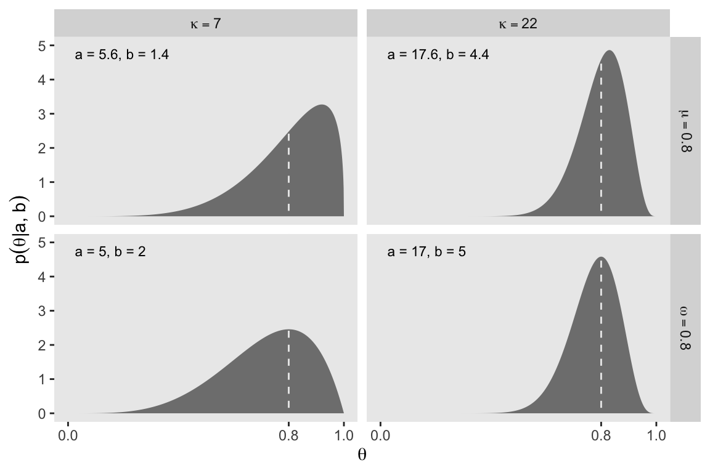
It’s also possible to define the beta distribution in terms of the mean \(\mu\) and standard deviation \(\sigma\). In this case,
\[ \begin{align*} \alpha & = \mu \left ( \frac{\mu(1 - \mu)}{\sigma^2} - 1\right), \text{and} \\ \beta & = (1 - \mu) \left ( \frac{\mu(1 - \mu)}{\sigma^2} - 1\right). \end{align*} \]
In lines 264 to 290 in his DBDA2E-utilities.R file, Kruschke provided a series of betaABfrom...() functions that will allow us to compute the \(a\) and \(b\) parameters from measures of central tendency (i.e., mean and mode) and of spread (i.e., \(\kappa\) and \(\sigma\)). Here are those bits of his code with a light tidyverse-style makeover.
beta_a_b_from_mean_kappa <- function(mean, kappa) {
if (mean <= 0 | mean >= 1) stop("Must have 0 < `mean` < 1")
if (kappa <= 0) stop("`kappa` must be > 0")
a <- mean * kappa
b <- (1.0 - mean) * kappa
list(a = a, b = b)
}
beta_a_b_from_mode_kappa <- function(mode, kappa) {
if (mode <= 0 | mode >= 1) stop("Must have 0 < `mode` < 1")
if (kappa <= 2) stop("`kappa` must be > 2 for `mode` parameterization")
a <- mode * (kappa - 2) + 1
b <- (1.0 - mode) * (kappa - 2) + 1
list(a = a, b = b)
}
beta_a_b_from_mean_sd <- function(mean, sd) {
if (mean <= 0 | mean >= 1) stop("Must have 0 < `mean` < 1")
if (sd <= 0) stop("`sd` must be > 0")
kappa <- mean * (1 - mean) / sd^2 - 1
if (kappa <= 0) stop("Invalid combination of `mean` and `sd`")
a <- mean * kappa
b <- (1.0 - mean) * kappa
list(a = a, b = b)
}You can use them like so.
beta_a_b_from_mean_kappa(mean = 0.25, kappa = 4)$a
[1] 1
$b
[1] 3beta_a_b_from_mode_kappa(mode = 0.25, kappa = 4)$a
[1] 1.5
$b
[1] 2.5beta_a_b_from_mean_sd(mean = 0.5, sd = 0.1)$a
[1] 12
$b
[1] 12You can also save the results as an object, which can then be indexed by parameter using the base-R $ syntax.
beta_param <- beta_a_b_from_mode_kappa(mode = 0.25, kappa = 4)
beta_param$a[1] 1.5beta_param$b[1] 2.5We’ll find this trick quite handy in the sections to come.
6.3 The posterior beta
I’m not going to reproduce all of Formula 6.8. But this a fine opportunity to re-express Bayes’ rule in terms of \(z\) and \(N\),
\[p(\theta \mid z, N) = \frac{p(z, N \mid \theta) \; p(\theta)}{p(z, N)}.\]
A key insight from the equations Kruschke worked through this section is: “If the prior distribution is \(\operatorname{beta}(a, b)\), and the data have \(z\) heads in \(N\) flips, then the posterior distribution is \(\operatorname{beta}(\theta \mid z + a, N - z + b)\)” (p. 132). We will be using that formula in the next section.
6.3.1 Posterior is compromise of prior and likelihood
As in the last two chapters, we relied our custom in_hdi_grid() function to compute HDI values from data grids. In this chapter we’ll add a new function that can compute HDI values analytically from a known density function. In his DBDA2E-utilities.R file, Kruschke defined an HDIofICDF() function, which computes HDI regions using inverse cumulative density functions. Here we define our version called hdi_of_icdf(), which is just a mild reworking of Kruschke’s code.
hdi_of_icdf <- function(name, width = 0.95, tol = 1e-8, ... ) {
incredible_mass <- 1.0 - width
interval_width <- function(low_tail_prob, name, width, ...) {
name(width + low_tail_prob, ...) - name(low_tail_prob, ...)
}
opt_info <- optimize(interval_width, c(0, incredible_mass),
name = name, width = width, tol = tol, ...)
hdi_lower_tail_prob <- opt_info$minimum
c(ll = name(hdi_lower_tail_prob, ...),
ul = name(width + hdi_lower_tail_prob, ...))
}Our hdi_of_icdf() function will take the name of an inverse cumulative density function, along with its parameters, and then return an HDI range, as defined by the width parameter. Since the prior at the top of Figure 6.3 is \(\operatorname{Beta}(5, 5)\), we can use hdi_of_icdf() to calculate the HDI like so.
hdi_of_icdf(name = qbeta,
shape1 = 5,
shape2 = 5,
width = 0.95) ll ul
0.2120085 0.7879915 The output is a data frame with two columns. The ll column has the value for the lower limit of the HDI, and the ul column has the value for the upper limit of the HDI.
Here are the HDI values for the posterior distribution at the bottom of the figure.
hdi_of_icdf(name = qbeta,
shape1 = 6,
shape2 = 14) ll ul
0.1142339 0.4967144 Note that since we set width = 0.95 as the default, we can leave it out if we want to stick with the conventional 95% intervals.
Now we are ready to start making Figure 6.3. Here we begin by making the primary data frame.
# Define the parameters for the prior and for the data
a <- 5
b <- 5
z <- 1
n <- 10
# Make the primary data frame
d <- data.frame(theta = seq(from = 0, to = 1, length.out = 1001)) |>
mutate(prior = dbeta(x = theta, shape1 = a, shape2 = b),
likelihood = dbern(x = theta, z = z, n = n),
posterior = dbeta(x = theta, shape1 = z + a, shape2 = n - z + b))
glimpse(d)Rows: 1,001
Columns: 4
$ theta <dbl> 0.000, 0.001, 0.002, 0.003, 0.004, 0.005, 0.006, 0.007, 0.008, 0.009, 0.010, 0.011, 0.012, 0.013, 0.014, 0.01…
$ prior <dbl> 0.000000e+00, 6.274838e-10, 9.999602e-09, 5.042039e-08, 1.587150e-07, 3.859339e-07, 7.970601e-07, 1.470719e-0…
$ likelihood <dbl> 0.0000000000, 0.0009910359, 0.0019642867, 0.0029199652, 0.0038582826, 0.0047794479, 0.0056836681, 0.006571148…
$ posterior <dbl> 0.000000e+00, 1.606884e-10, 5.075515e-09, 3.804314e-08, 1.582357e-07, 4.766319e-07, 1.170610e-06, 2.497258e-0…Note how we used the formula from the end of Section 6.3 to define the \(a\) and \(b\) parameters for the posterior beta distribution in terms of the \(a\) and \(b\) parameters from the prior and the \(z\) and \(N\) parameters summarizing the data.
One way to combine the analytic HDI information of the prior with the d data grid is to compute and save the HDI values with hdi_of_icdf(), and then add those values to the data frame as new vectors ll and ul. Then you can make a new prior_in_hdi column based on a logical statement referencing theta, ll, and ul.
h <- hdi_of_icdf(name = qbeta,
shape1 = a,
shape2 = b)
d <- d |>
mutate(ll = h[1],
ul = h[2]) |>
mutate(prior_in_hdi = theta > ll & theta < ul)
head(d) theta prior likelihood posterior ll ul prior_in_hdi
1 0.000 0.000000e+00 0.0000000000 0.000000e+00 0.2120085 0.7879915 FALSE
2 0.001 6.274838e-10 0.0009910359 1.606884e-10 0.2120085 0.7879915 FALSE
3 0.002 9.999602e-09 0.0019642867 5.075515e-09 0.2120085 0.7879915 FALSE
4 0.003 5.042039e-08 0.0029199652 3.804314e-08 0.2120085 0.7879915 FALSE
5 0.004 1.587150e-07 0.0038582826 1.582357e-07 0.2120085 0.7879915 FALSE
6 0.005 3.859339e-07 0.0047794479 4.766319e-07 0.2120085 0.7879915 FALSENow we’ll use this strategy to make the top panel for Figure 6.3.
# To hold the same y-axis limit for prior and posterior
y_max_pp <- d |>
pivot_longer(cols = c(prior, posterior)) |>
slice_max(value) |>
pull(value)
# Save the prior panel
p1 <- d |>
ggplot(aes(x = theta, y = prior)) +
geom_area(aes(fill = prior_in_hdi),
stat = "identity") +
geom_line(data = d |>
filter(prior_in_hdi == TRUE) |>
slice(c(1, n())),
# linewidth = 0.75,
arrow = arrow(length = unit(0.1, "cm"),
ends = "both", type = "closed"),
y = 0) +
annotate(geom = "point",
x = a / (a + b), y = 0) +
scale_x_continuous(NULL, breaks = NULL) +
scale_y_continuous(expression(dbeta(theta*'|'*5*', '*5)), limits = c(0, y_max_pp)) +
scale_fill_manual(values = c("steelblue1", "steelblue3"), breaks = NULL) +
facet_wrap(~ "Prior (beta)") +
theme_cowplot()
# Preview the prior panel
p1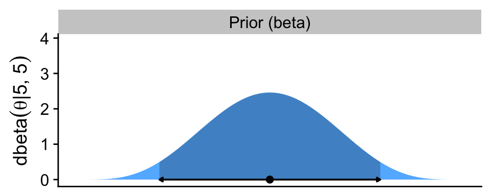
The arrow on the bottom of the plot marks off the analytically-defined 95% HDI, and the dot in the middle marks of the mean. Note how we used the \(a / (a + b)\) formula for the beta prior we introduced in Section 6.2.1.
Note how we loaded the cowplot package (Wilke, 2020) at the top of the code chunk. We played around a bit with plotting conventions in the previous chapters. From this chapter onward we’ll explore plotting conventions in a more deliberate fashion. One quick way to alter the look and feel of a plot is by altering its theme, and the cowplot package includes several nice theme options. In this chapter, we’ll focus on making simple and conventional-looking plots with the theme_cowplot() function.
Now we make the panel for the likelihood.
# Save the likelihood panel
p2 <- d |>
ggplot(aes(x = theta, y = likelihood)) +
geom_area(fill = "gray67") +
scale_x_continuous(NULL, breaks = NULL) +
scale_y_continuous(expression(p(D*'|'*theta)), breaks = 0:2 * 0.02) +
facet_wrap(~ "Likelihood (Bernoulli)") +
theme_cowplot()
# Preview
p2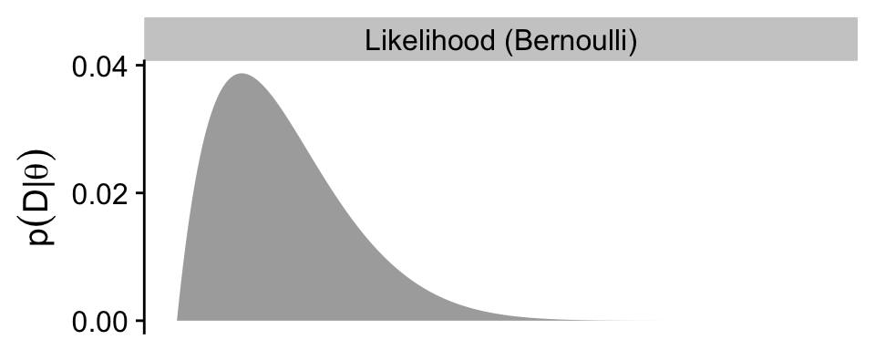
As in the text, we do not compute an HDI for the likelihood.
Here’s the posterior panel.
# Update the HDI
h <- hdi_of_icdf(name = qbeta,
shape1 = z + a,
shape2 = n - z + b)
# Update the data
d <- d |>
select(-ll, -ul) |>
mutate(ll = h[1],
ul = h[2]) |>
mutate(posterior_in_hdi = theta > ll & theta < ul)
# Save the posterior panel
p3 <- d |>
ggplot(aes(x = theta, y = posterior)) +
geom_area(aes(fill = posterior_in_hdi),
stat = "identity") +
geom_line(data = d |>
filter(posterior_in_hdi == TRUE) |>
slice(c(1, n())),
linewidth = 0.5,
arrow = arrow(length = unit(0.1, "cm"),
ends = "both", type = "closed"),
y = 0) +
annotate(geom = "point",
x = (z + a) / ((z + a) + (n - z + b)), y = 0) +
scale_y_continuous(expression(dbeta(theta*'|'*6*', '*14)), limits = c(0, y_max_pp)) +
scale_fill_manual(values = c("steelblue1", "steelblue3"), breaks = NULL) +
xlab(expression(theta)) +
facet_wrap(~ "Posterior (beta)") +
theme_cowplot()
# preview
p3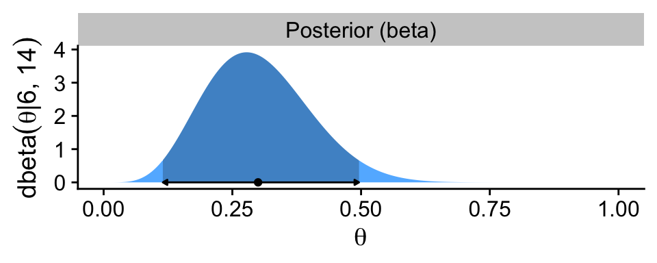
Now combine the three ggplot objects with patchwork syntax to make the complete version of Figure 6.3.
p1 / p2 / p3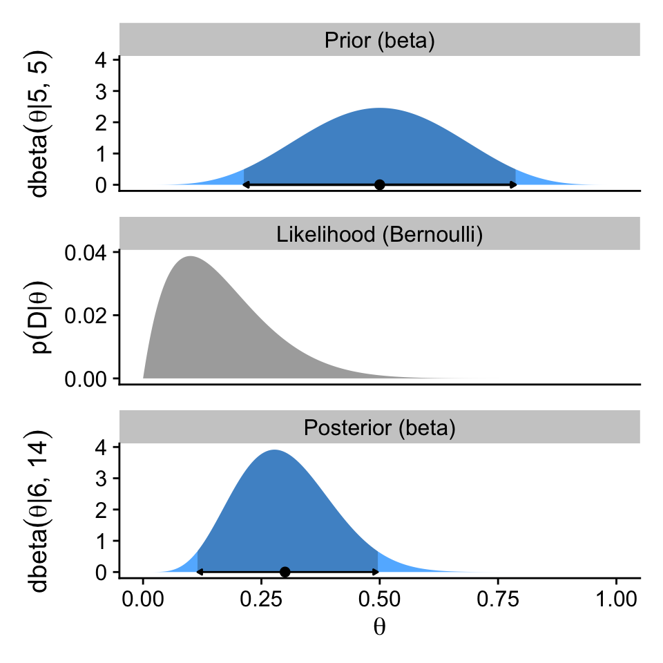
Here are the mean calculations from the last paragraph on page 133.
a / (a + b) # Prior mean[1] 0.5z / n # Proportion of heads[1] 0.1(z + a) / (n + a + b) # Posterior mean[1] 0.36.4 Examples
6.4.1 Prior knowledge expressed as a beta distribution
If you flip an unaltered freshly-minted coin 20 times and end up with 17 heads, 85% of those trials are heads.
100 * (17 / 20)[1] 85In the first paragraph of this section, Kruschke suggested we consider a beta prior with a mode of \(\omega = 0.5\) and an effective sample size \(\kappa = 500\). Why? Because even in the face of 17 heads out of 20 flips, our default prior assumption should still be that freshly-minted coins are fair. To compute the \(a\) and \(b\) parameters that correspond to \(\omega = 0.5\) and \(\kappa = 500\), we might the beta_a_b_from_mode_kappa() function.
beta_a_b_from_mode_kappa(mode = 0.5, kappa = 500)$a
[1] 250
$b
[1] 250Confusingly, Kruschke switched from \(\operatorname{Beta}(250, 250)\) in the prose to \(\operatorname{Beta}(100, 100)\) in Figure 6.4.a, which he acknowledged in his Corrigenda. We’ll stick with \(\operatorname{Beta}(100, 100)\), which corresponds to \(\omega = 0.5\) and \(\kappa = 200\).
beta_a_b_from_mode_kappa(mode = 0.5, kappa = 200)$a
[1] 100
$b
[1] 100To make our version of Figure 6.4, we’ll use a workflow designed to handle the examples from all three columns at once, rather than taking them one at a time as in previous sections. As a first step, we’ll use two calls of beta_a_b_from_mode_kappa() and one call of beta_a_b_from_mean_kappa(), and nest all three within bind_rows() to return a nicely-formatted data frame. Then we’ll add an example column, and rearrange the columns with select().
# Save this vector to streamline the code in `mutate()`
examples <- c("coin", "basketball", "color")
d <- bind_rows(
beta_a_b_from_mode_kappa(mode = 0.5, kappa = 200),
beta_a_b_from_mode_kappa(mode = 0.75, kappa = 25),
beta_a_b_from_mean_kappa(mean = 0.5, kappa = 2)
) |>
mutate(example = factor(examples, levels = examples)) |>
select(example, everything())
d# A tibble: 3 × 3
example a b
<fct> <dbl> <dbl>
1 coin 100 100
2 basketball 18.2 6.75
3 color 1 1 Next we can add in the \(z\) and \(N\) values for the data, which are the same across all three examples. With those values, we can use the formulas from Section 6.3 to define the \(a\) and \(b\) parameters for the beta-distributed posteriors.
d <- d |>
mutate(z = 17,
n = 20) |>
mutate(a_post = z + a,
b_post = n - z + b)
d# A tibble: 3 × 7
example a b z n a_post b_post
<fct> <dbl> <dbl> <dbl> <dbl> <dbl> <dbl>
1 coin 100 100 17 20 117 103
2 basketball 18.2 6.75 17 20 35.2 9.75
3 color 1 1 17 20 18 4 Now we use expand_grid() to add in a densely-backed \(\theta\) sequence for each of the examples, whereafter we can add in columns for the priors, likelihoods, and posteriors.
d <- d |>
expand_grid(theta = seq(from = 0, to = 1, length.out = 1001)) |>
mutate(prior = dbeta(x = theta, shape1 = a, shape2 = b),
likelihood = dbern(x = theta, z = z, n = n),
posterior = dbeta(x = theta, shape1 = a_post, shape2 = b_post)) |>
select(example, everything())
glimpse(d)Rows: 3,003
Columns: 11
$ example <fct> coin, coin, coin, coin, coin, coin, coin, coin, coin, coin, coin, coin, coin, coin, coin, coin, coin, coin, c…
$ a <dbl> 100, 100, 100, 100, 100, 100, 100, 100, 100, 100, 100, 100, 100, 100, 100, 100, 100, 100, 100, 100, 100, 100,…
$ b <dbl> 100, 100, 100, 100, 100, 100, 100, 100, 100, 100, 100, 100, 100, 100, 100, 100, 100, 100, 100, 100, 100, 100,…
$ z <dbl> 17, 17, 17, 17, 17, 17, 17, 17, 17, 17, 17, 17, 17, 17, 17, 17, 17, 17, 17, 17, 17, 17, 17, 17, 17, 17, 17, 1…
$ n <dbl> 20, 20, 20, 20, 20, 20, 20, 20, 20, 20, 20, 20, 20, 20, 20, 20, 20, 20, 20, 20, 20, 20, 20, 20, 20, 20, 20, 2…
$ a_post <dbl> 117, 117, 117, 117, 117, 117, 117, 117, 117, 117, 117, 117, 117, 117, 117, 117, 117, 117, 117, 117, 117, 117,…
$ b_post <dbl> 103, 103, 103, 103, 103, 103, 103, 103, 103, 103, 103, 103, 103, 103, 103, 103, 103, 103, 103, 103, 103, 103,…
$ theta <dbl> 0.000, 0.001, 0.002, 0.003, 0.004, 0.005, 0.006, 0.007, 0.008, 0.009, 0.010, 0.011, 0.012, 0.013, 0.014, 0.01…
$ prior <dbl> 0.000000e+00, 4.100480e-237, 2.353664e-207, 5.776652e-190, 1.223108e-177, 4.348773e-168, 2.716922e-160, 1.043…
$ likelihood <dbl> 0.000000e+00, 9.970030e-52, 1.302871e-46, 1.279814e-43, 1.697453e-41, 7.515525e-40, 1.662380e-38, 2.277794e-3…
$ posterior <dbl> 0.000000e+00, 2.873450e-282, 2.155354e-247, 5.196316e-227, 1.459269e-212, 2.297199e-201, 3.174535e-192, 1.670…Like in the previous section, we’ll be using the hdi_of_icdf() function to compute the analytically-defined HDI values. But since we want to do this separately by example within the context of a pre-existing data frame, we’ll do so within the context of the map2() function, which will allow for complex output that takes up more than one cell per row.
d_prior_hdi <- d |>
filter(example != "color") |>
distinct(example, a, b) |>
mutate(prior_hdi = map2(.x = a, .y = b, .f = \(a, b) {
h <- hdi_of_icdf(name = qbeta, shape1 = a, shape2 = b)
data.frame(ll = h[1], ul = h[2])
}))
d_prior_hdi# A tibble: 2 × 4
example a b prior_hdi
<fct> <dbl> <dbl> <list>
1 coin 100 100 <df [1 × 2]>
2 basketball 18.2 6.75 <df [1 × 2]>Notice that that each cell within the new prior_hdi column contains a data frame with a single row, and two columns. The first column is the value for the lower limit of the HDI (ll), and the second column is the value for the upper limit of the HDI (ul). We can have more direct access to those values with help from the unnest() function.
d_prior_hdi <- d_prior_hdi |>
unnest(prior_hdi)
d_prior_hdi# A tibble: 2 × 5
example a b ll ul
<fct> <dbl> <dbl> <dbl> <dbl>
1 coin 100 100 0.431 0.569
2 basketball 18.2 6.75 0.558 0.892You’ll also notice that we only have HDI information for the first two examples. Because Kruschke used a flat \(\operatorname{Beta}(1, 1)\) prior for the third example, the HDI is not defined because the HDI, recall, is based on ranking density values. When all the density values of a probability mass are the same, there’s no good way to rank them.
Now we’ll take a similar approach to make a sister data set called d_posterior_hdi, which contains the analytically-computed HDI bounds for the three posterior distributions, as defined by the a_post and b_post columns.
d_posterior_hdi <- d |>
distinct(example, a_post, b_post) |>
mutate(posterior_hdi = map2(.x = a_post, .y = b_post, .f = \(a_post, b_post) {
h <- hdi_of_icdf(name = qbeta, shape1 = a_post, shape2 = b_post)
data.frame(ll = h[1], ul = h[2])
})) |>
unnest(posterior_hdi)
d_posterior_hdi# A tibble: 3 × 5
example a_post b_post ll ul
<fct> <dbl> <dbl> <dbl> <dbl>
1 coin 117 103 0.466 0.597
2 basketball 35.2 9.75 0.663 0.897
3 color 18 4 0.660 0.959Happily, this time we have solutions for all three examples.
Next, we’ll want to make a data frame with the prior and posterior modes. For these, we can use the \(\omega\) formula from Section 6.2.1, which clarified the mode of a beta distribution is \((a − 1) / (a + b − 2)\), provided \(a > 1\) and \(b > 1\).
d_mode <- d |>
distinct(example, a, b, a_post, b_post) |>
mutate(prior_mode = (a - 1) / (a + b - 2),
posterior_mode = (a_post - 1) / (a_post + b_post - 2),
prior = 0,
posterior = 0)
d_mode# A tibble: 3 × 9
example a b a_post b_post prior_mode posterior_mode prior posterior
<fct> <dbl> <dbl> <dbl> <dbl> <dbl> <dbl> <dbl> <dbl>
1 coin 100 100 117 103 0.5 0.532 0 0
2 basketball 18.2 6.75 35.2 9.75 0.75 0.797 0 0
3 color 1 1 18 4 NaN 0.85 0 0Notice that since the prior for the color example does not fulfill the criteria \(a > 1\) and \(b > 1\), that value is undefined.
If you look closely at Kruschke’s Figure 6.4, you’ll see that the y-axis labels are unique for each panel in the prior and posterior columns. If we were to follow that convention, it would require we either make each plot individually, which would require a lot of repetitive code, or we wrap the plot code into a custom plotting function, which could obscure what we’re doing from readers who don’t posses advanced programming skills. I don’t like either of those options, so our approach will be to keep the y-axis labels constant within rows, and to display the \(a\) and \(b\) values within each plot as annotation.To that end, we’ll want a final supplemental data frame containing the labels called d_text.
d_text <- d |>
group_by(example) |>
slice_min(theta) |>
mutate(prior = Inf,
likelihood = Inf,
posterior = Inf,
label_prior = str_c("atop(a==", a, ",b==", b, ")"),
label_likelihood = str_c("atop(z==", z, ",N==", n, ")"),
label_posterior = str_c("atop(a==", a_post, ",b==", b_post, ")")) |>
select(example, theta, prior, likelihood, posterior, label_prior:label_posterior)
d_text# A tibble: 3 × 8
# Groups: example [3]
example theta prior likelihood posterior label_prior label_likelihood label_posterior
<fct> <dbl> <dbl> <dbl> <dbl> <chr> <chr> <chr>
1 coin 0 Inf Inf Inf atop(a==100,b==100) atop(z==17,N==20) atop(a==117,b==103)
2 basketball 0 Inf Inf Inf atop(a==18.25,b==6.75) atop(z==17,N==20) atop(a==35.25,b==9.75)
3 color 0 Inf Inf Inf atop(a==1,b==1) atop(z==17,N==20) atop(a==18,b==4) We’re finally ready to make the first row for our version of Figure 6.4.
# To hold the same y-axis limit for prior and posterior
y_max_pp <- d |>
pivot_longer(cols = c(prior, posterior)) |>
slice_max(value) |>
pull(value)
# Update the data
d <- d |>
left_join(d_prior_hdi,
by = join_by(example, a, b)) |>
mutate(prior_in_hdi = theta > ll & theta < ul)
# Save the prior row
p1 <- d |>
ggplot(aes(x = theta, y = prior)) +
geom_area(aes(fill = prior_in_hdi),
stat = "identity") +
geom_line(data = d |>
filter(prior_in_hdi == TRUE) |>
mutate(prior = 0),
arrow = arrow(length = unit(0.1, "cm"),
ends = "both", type = "closed")) +
geom_point(data = d_mode |>
drop_na(prior_mode),
aes(x = prior_mode)) +
geom_text(data = d_text,
aes(label = label_prior),
hjust = 0, parse = TRUE, size = 2.5, vjust = 1.25) +
scale_x_continuous(NULL, breaks = NULL) +
scale_y_continuous(expression(dbeta(theta*'|a, b')), limits = c(0, y_max_pp)) +
scale_fill_manual(values = c("steelblue1", "steelblue3"), na.value = "grey65", breaks = NULL) +
facet_grid("Prior\n(beta)" ~ example, labeller = labeller(example = str_to_title)) +
theme_cowplot() +
panel_border()
# Preview the prior row
p1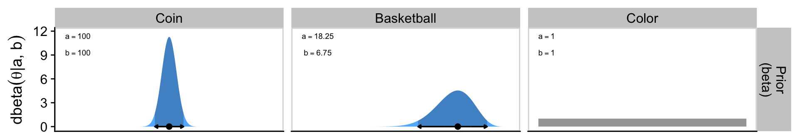
Note how we used the cowplot::panel_border() function to add light gray borders around the facet panels. You can leave them out, but I think it’ll be clear why we’re better off adding them in when we display the entire figure, below.
As the likelihood plots don’t display HDI regions or modes, the code for that row in the figure is much simpler.
# Save the likelihood row
p2 <- d |>
ggplot(aes(x = theta, y = likelihood)) +
geom_area(fill = "grey65") +
geom_text(data = d_text,
aes(label = label_likelihood),
hjust = 0, parse = TRUE, size = 2.5, vjust = 1.25) +
scale_x_continuous(NULL, breaks = NULL) +
scale_y_continuous(expression(p(D*'|'*theta)), breaks = 0:2 * 0.0001) +
facet_grid("Likelihood\n(Bernoulli)" ~ example) +
theme_cowplot() +
panel_border() +
theme(strip.text.x = element_blank())
# Preview the likelihood row
p2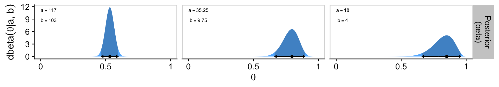
The code for the bottom row of the figure is more similar to the code we used for the top row, with a few minor adjustments.
# Update the data
d <- d |>
select(-ll, -ul) |>
left_join(d_posterior_hdi,
by = join_by(example, a_post, b_post)) |>
mutate(posterior_in_hdi = theta > ll & theta < ul)
# Save the posterior row
p3 <- d |>
ggplot(aes(x = theta, y = posterior)) +
geom_area(aes(fill = posterior_in_hdi),
stat = "identity") +
geom_line(data = d |>
filter(posterior_in_hdi == TRUE) |>
mutate(posterior = 0),
arrow = arrow(length = unit(0.1, "cm"),
ends = "both", type = "closed")) +
geom_point(data = d_mode,
aes(x = posterior_mode)) +
geom_text(data = d_text,
aes(label = label_posterior),
hjust = 0, parse = TRUE, size = 2.5, vjust = 1.25) +
scale_x_continuous(expression(theta), breaks = 0:2 / 2, labels = c(0, 0.5, 1)) +
scale_y_continuous(expression(dbeta(theta*'|a, b')), limits = c(0, y_max_pp)) +
scale_fill_manual(values = c("steelblue1", "steelblue3"), breaks = NULL) +
facet_grid("Posterior\n(beta)" ~ example) +
theme_cowplot() +
panel_border() +
theme(strip.text.x = element_blank())
# Preview the posterior row
p3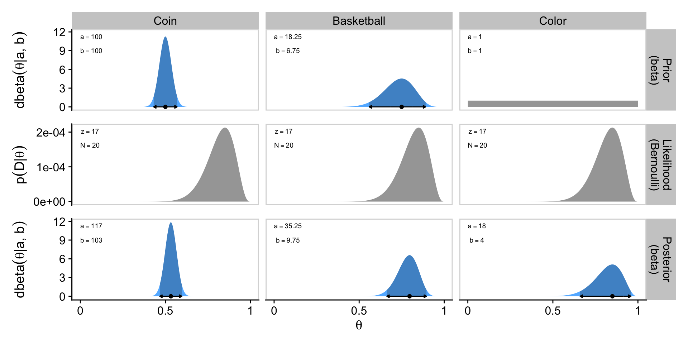
Now we finally combine all three rows with patchwork syntax to present our custom version of Figure 6.4.
p1 / p2 / p3Glorious.
6.4.2 Prior knowledge that cannot be expressed as a beta distribution
The beauty of using a beta distribution to express prior knowledge is that the posterior distribution is again exactly a beta distribution, and therefore, no matter how much data we include, we always have an exact representation of the posterior distribution and a simple way of computing it. But not all prior knowledge can be expressed by a beta distribution, because the beta distribution can only be in the forms illustrated by Figure 6.1. If the prior knowledge cannot be expressed as a beta distribution, then we must use a different method to derive the posterior. In particular, we might revert to grid approximation as was explained in Section 5.5 (p. 116).
For such a small section in the text, the underlying code is a bit of a beast. For kicks, we’ll practice two ways. First we’ll follow the code Kruschke used in the text. Our second attempt will be in a more tidyverse sort of way.
6.4.2.1 Figure 6.5 in Kruschke style
First define the data comb of theta values, and for the prior, p_theta.
# Fine teeth for the theta comb
theta <- seq(from = 0, to = 1, length = 1000)
# Two triangular peaks on a small non-zero floor
p_theta <-
c(rep(1, 200),
seq(1, 100, length = 50),
seq(100, 1, length = 50),
rep(1, 200)) |>
rep(times = 2)
# make p_theta sum to 1.0
p_theta <- p_theta / sum(p_theta)Here’s Kruschke’s BernGrid() code in all its glory. I am leaving it in the code style found in his supporting files.
BernGrid = function( Theta , pTheta , Data , plotType=c("Points","Bars")[2] ,
showCentTend=c("Mean","Mode","None")[3] ,
showHDI=c(TRUE,FALSE)[2] , HDImass=0.95 ,
showpD=c(TRUE,FALSE)[2] , nToPlot=length(Theta) ) {
# Theta is vector of values between 0 and 1.
# pTheta is prior probability mass at each value of Theta
# Data is vector of 0's and 1's.
# Check for input errors:
if ( any( Theta > 1 | Theta < 0 ) ) {
stop("Theta values must be between 0 and 1")
}
if ( any( pTheta < 0 ) ) {
stop("pTheta values must be non-negative")
}
if ( !isTRUE(all.equal( sum(pTheta) , 1.0 )) ) {
stop("pTheta values must sum to 1.0")
}
if ( !all( Data == 1 | Data == 0 ) ) {
stop("Data values must be 0 or 1")
}
# Create summary values of Data
z = sum( Data ) # number of 1's in Data
N = length( Data )
# Compute the Bernoulli likelihood at each value of Theta:
pDataGivenTheta = Theta^z * (1-Theta)^(N-z)
# Compute the evidence and the posterior via Bayes' rule:
pData = sum( pDataGivenTheta * pTheta )
pThetaGivenData = pDataGivenTheta * pTheta / pData
# Plot the results.
layout( matrix( c( 1,2,3 ) ,nrow=3 ,ncol=1 ,byrow=FALSE ) ) # 3x1 panels
par( mar=c(3,3,1,0) , mgp=c(2,0.7,0) , mai=c(0.5,0.5,0.3,0.1) ) # margins
cexAxis = 1.33
cexLab = 1.75
# convert plotType to notation used by plot:
if ( plotType=="Points" ) { plotType="p" }
if ( plotType=="Bars" ) { plotType="h" }
dotsize = 5 # how big to make the plotted dots
barsize = 5 # how wide to make the bar lines
# If the comb has a zillion teeth, it's too many to plot, so plot only a
# thinned out subset of the teeth.
nteeth = length(Theta)
if ( nteeth > nToPlot ) {
thinIdx = round( seq( 1, nteeth , length=nteeth ) )
} else {
thinIdx = 1:nteeth
}
# Plot the prior.
yLim = c(0,1.1*max(c(pTheta,pThetaGivenData)))
plot( Theta[thinIdx] , pTheta[thinIdx] , type=plotType ,
pch="." , cex=dotsize , lwd=barsize ,
xlim=c(0,1) , ylim=yLim , cex.axis=cexAxis ,
xlab=bquote(theta) , ylab=bquote(p(theta)) , cex.lab=cexLab ,
main="Prior" , cex.main=1.5 , col="skyblue" )
if ( showCentTend != "None" ) {
if ( showCentTend == "Mean" ) {
meanTheta = sum( Theta * pTheta )
if ( meanTheta > .5 ) {
textx = 0 ; textadj = c(0,1)
} else {
textx = 1 ; textadj = c(1,1)
}
text( textx , yLim[2] ,
bquote( "mean=" * .(signif(meanTheta,3)) ) ,
cex=2.0 , adj=textadj )
}
if ( showCentTend == "Mode" ) {
modeTheta = Theta[ which.max( pTheta ) ]
if ( modeTheta > .5 ) {
textx = 0 ; textadj = c(0,1)
} else {
textx = 1 ; textadj = c(1,1)
}
text( textx , yLim[2] ,
bquote( "mode=" * .(signif(modeTheta,3)) ) ,
cex=2.0 , adj=textadj )
}
}
# Mark the highest density interval. HDI points are not thinned in the plot.
if ( showHDI ) {
HDIinfo = HDIofGrid( pTheta , credMass=HDImass )
points( Theta[ HDIinfo$indices ] ,
rep( HDIinfo$height , length( HDIinfo$indices ) ) ,
pch="-" , cex=1.0 )
text( mean( Theta[ HDIinfo$indices ] ) , HDIinfo$height ,
bquote( .(100*signif(HDIinfo$mass,3)) * "% HDI" ) ,
adj=c(0.5,-1.5) , cex=1.5 )
# Mark the left and right ends of the waterline.
# Find indices at ends of sub-intervals:
inLim = HDIinfo$indices[1] # first point
for ( idx in 2:(length(HDIinfo$indices)-1) ) {
if ( ( HDIinfo$indices[idx] != HDIinfo$indices[idx-1]+1 ) | # jumps on left, OR
( HDIinfo$indices[idx] != HDIinfo$indices[idx+1]-1 ) ) { # jumps on right
inLim = c(inLim,HDIinfo$indices[idx]) # include idx
}
}
inLim = c(inLim,HDIinfo$indices[length(HDIinfo$indices)]) # last point
# Mark vertical lines at ends of sub-intervals:
for ( idx in inLim ) {
lines( c(Theta[idx],Theta[idx]) , c(-0.5,HDIinfo$height) , type="l" , lty=2 ,
lwd=1.5 )
text( Theta[idx] , HDIinfo$height , bquote(.(round(Theta[idx],3))) ,
adj=c(0.5,-0.1) , cex=1.2 )
}
}
# Plot the likelihood: p(Data|Theta)
plot( Theta[thinIdx] , pDataGivenTheta[thinIdx] , type=plotType ,
pch="." , cex=dotsize , lwd=barsize ,
xlim=c(0,1) , ylim=c(0,1.1*max(pDataGivenTheta)) , cex.axis=cexAxis ,
xlab=bquote(theta) , ylab=bquote( "p(D|" * theta * ")" ) , cex.lab=cexLab ,
main="Likelihood" , cex.main=1.5 , col="skyblue" )
if ( z > .5*N ) { textx = 0 ; textadj = c(0,1) }
else { textx = 1 ; textadj = c(1,1) }
text( textx ,1.0*max(pDataGivenTheta) ,cex=2.0
,bquote( "Data: z=" * .(z) * ",N=" * .(N) ) ,adj=textadj )
if ( showCentTend != "None" ) {
if ( showCentTend == "Mean" ) {
meanTheta = sum( Theta * pDataGivenTheta )
if ( meanTheta > .5 ) {
textx = 0 ; textadj = c(0,1)
} else {
textx = 1 ; textadj = c(1,1)
}
text( textx , 0.7*max(pDataGivenTheta) ,
bquote( "mean=" * .(signif(meanTheta,3)) ) ,
cex=2.0 , adj=textadj )
}
if ( showCentTend == "Mode" ) {
modeTheta = Theta[ which.max( pDataGivenTheta ) ]
if ( modeTheta > .5 ) {
textx = 0 ; textadj = c(0,1)
} else {
textx = 1 ; textadj = c(1,1)
}
text( textx , 0.7*max(pDataGivenTheta) ,
bquote( "mode=" * .(signif(modeTheta,3)) ) ,
cex=2.0 , adj=textadj )
}
}
# Plot the posterior.
yLim = c(0,1.1*max(c(pTheta,pThetaGivenData)))
plot( Theta[thinIdx] , pThetaGivenData[thinIdx] , type=plotType ,
pch="." , cex=dotsize , lwd=barsize ,
xlim=c(0,1) , ylim=yLim , cex.axis=cexAxis ,
xlab=bquote(theta) , ylab=bquote( "p(" * theta * "|D)" ) , cex.lab=cexLab ,
main="Posterior" , cex.main=1.5 , col="skyblue" )
if ( showCentTend != "None" ) {
if ( showCentTend == "Mean" ) {
meanTheta = sum( Theta * pThetaGivenData )
if ( meanTheta > .5 ) {
textx = 0 ; textadj = c(0,1)
} else {
textx = 1 ; textadj = c(1,1)
}
text( textx , yLim[2] ,
bquote( "mean=" * .(signif(meanTheta,3)) ) ,
cex=2.0 , adj=textadj )
}
if ( showCentTend == "Mode" ) {
modeTheta = Theta[ which.max( pThetaGivenData ) ]
if ( modeTheta > .5 ) {
textx = 0 ; textadj = c(0,1)
} else {
textx = 1 ; textadj = c(1,1)
}
text( textx , yLim[2] ,
bquote( "mode=" * .(signif(modeTheta,3)) ) ,
cex=2.0 , adj=textadj )
}
}
# Plot marginal likelihood pData:
if ( showpD ) {
meanTheta = sum( Theta * pThetaGivenData )
if ( meanTheta > .5 ) {
textx = 0 ; textadj = c(0,1)
} else {
textx = 1 ; textadj = c(1,1)
}
text( textx , 0.75*max(pThetaGivenData) , cex=2.0 ,
bquote( "p(D)=" * .(signif(pData,3)) ) ,adj=textadj )
}
# Mark the highest density interval. HDI points are not thinned in the plot.
if ( showHDI ) {
HDIinfo = HDIofGrid( pThetaGivenData , credMass=HDImass )
points( Theta[ HDIinfo$indices ] ,
rep( HDIinfo$height , length( HDIinfo$indices ) ) ,
pch="-" , cex=1.0 )
text( mean( Theta[ HDIinfo$indices ] ) , HDIinfo$height ,
bquote( .(100*signif(HDIinfo$mass,3)) * "% HDI" ) ,
adj=c(0.5,-1.5) , cex=1.5 )
# Mark the left and right ends of the waterline.
# Find indices at ends of sub-intervals:
inLim = HDIinfo$indices[1] # first point
for ( idx in 2:(length(HDIinfo$indices)-1) ) {
if ( ( HDIinfo$indices[idx] != HDIinfo$indices[idx-1]+1 ) | # jumps on left, OR
( HDIinfo$indices[idx] != HDIinfo$indices[idx+1]-1 ) ) { # jumps on right
inLim = c(inLim,HDIinfo$indices[idx]) # include idx
}
}
inLim = c(inLim,HDIinfo$indices[length(HDIinfo$indices)]) # last point
# Mark vertical lines at ends of sub-intervals:
for ( idx in inLim ) {
lines( c(Theta[idx],Theta[idx]) , c(-0.5,HDIinfo$height) , type="l" , lty=2 ,
lwd=1.5 )
text( Theta[idx] , HDIinfo$height , bquote(.(round(Theta[idx],3))) ,
adj=c(0.5,-0.1) , cex=1.2 )
}
}
# return( pThetaGivenData )
} # end of functionYou plot using Kruschke’s method, like so.
Data <- c(rep(0, 13), rep(1, 14))
BernGrid(theta, p_theta, Data, plotType = "Bars",
showCentTend = "None", showHDI = FALSE, showpD = FALSE)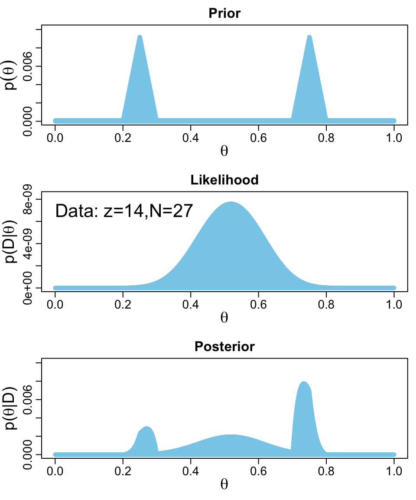
The method works fine, but I’m not a fan. It’s clear Kruschke put a lot of thought into the BernGrid() function. However, its inner workings are too opaque, for me, which leads to our next section…
6.4.2.2 Figure 6.5 in tidyverse style
Here we’ll be plotting with ggplot2. But let’s first get the data into a tibble.
z <- 14
n <- 27
d <- tibble(theta = seq(from = 0, to = 1, length.out = 1000),
prior = c(rep(1, times = 200),
seq(from = 1, to = 100, length.out = 50),
seq(from = 100, to = 1, length.out = 50),
rep(1, times = 200)) |>
rep(times = 2)) |>
mutate(prior = prior / sum(prior),
likelihood = dbern(x = theta, z = z, n = n)) |>
mutate(evidence = sum(likelihood * prior)) |>
mutate(posterior = likelihood * prior / evidence)
glimpse(d)Rows: 1,000
Columns: 5
$ theta <dbl> 0.000000000, 0.001001001, 0.002002002, 0.003003003, 0.004004004, 0.005005005, 0.006006006, 0.007007007, 0.008…
$ prior <dbl> 9.174312e-05, 9.174312e-05, 9.174312e-05, 9.174312e-05, 9.174312e-05, 9.174312e-05, 9.174312e-05, 9.174312e-0…
$ likelihood <dbl> 0.000000e+00, 1.000988e-42, 1.618784e-38, 4.664454e-36, 2.583876e-34, 5.798757e-33, 7.348345e-32, 6.277058e-3…
$ evidence <dbl> 3.546798e-10, 3.546798e-10, 3.546798e-10, 3.546798e-10, 3.546798e-10, 3.546798e-10, 3.546798e-10, 3.546798e-1…
$ posterior <dbl> 0.000000e+00, 2.589202e-37, 4.187221e-33, 1.206529e-30, 6.683575e-29, 1.499933e-27, 1.900757e-26, 1.623653e-2…With our nice tibble in hand, we’ll plot the prior, likelihood and posterior one at a time, and then combine them with patchwork syntax.
# Prior
p1 <- d |>
ggplot(aes(x = theta, y = prior)) +
geom_area(fill = "steelblue2") +
scale_x_continuous(NULL, breaks = NULL) +
ylab(expression(p(theta))) +
facet_wrap(~ "Prior")
# Likelihood
p2 <- d |>
ggplot(aes(x = theta, y = likelihood)) +
geom_area(fill = "steelblue2") +
scale_x_continuous(NULL, breaks = NULL) +
ylab(expression(p(D*"|"*theta))) +
facet_wrap(~ "Likelihood")
# Posterior
p3 <- d |>
ggplot(aes(x = theta, y = posterior)) +
geom_area(fill = "steelblue2") +
labs(x = expression(theta),
y = expression(p(theta*"|"*D))) +
facet_wrap(~ "Posterior")
# Combine, adjust the global theme, and print
(p1 / p2 / p3) &
theme_cowplot()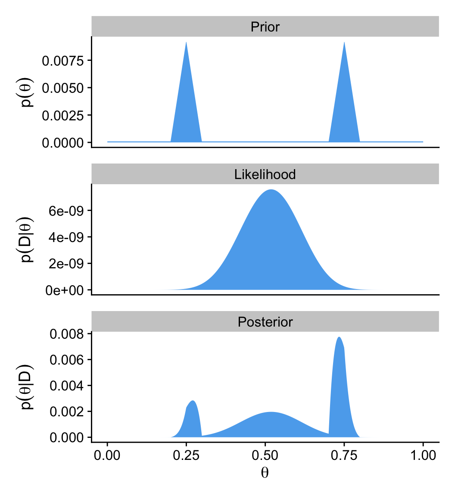
Since we are once again using grid approximation, we could have added shading and arrows for the HDI regions for the prior and posterior in this plot with help from the in_hdi_grid() from the last two chapters. Enthusiastic readers might take that as a challenge.
6.5 Summary
The main point of this chapter was to demonstrate how Bayesian inference works when Bayes’ rule can be solved analytically, using mathematics alone, without numerical approximation…
Unfortunately, there are two severe limitations with this approach… Thus, although it is interesting and educational to see how Bayes’ rule can be solved analytically, we will have to abandon exact mathematical solutions when doing complex applications. We will instead use Markov chain Monte Carlo (MCMC) methods. (p. 139)
And if you’re using this ebook, I imagine that’s exactly what you’re looking for. We want to use the power of a particular kind of MCMC, Hamiltonian Monte Carlo, through the interface of the brms package. Get excited. It’s coming.
Session info
sessionInfo()R version 4.5.1 (2025-06-13)
Platform: aarch64-apple-darwin20
Running under: macOS Ventura 13.4
Matrix products: default
BLAS: /Library/Frameworks/R.framework/Versions/4.5-arm64/Resources/lib/libRblas.0.dylib
LAPACK: /Library/Frameworks/R.framework/Versions/4.5-arm64/Resources/lib/libRlapack.dylib; LAPACK version 3.12.1
locale:
[1] en_US.UTF-8/en_US.UTF-8/en_US.UTF-8/C/en_US.UTF-8/en_US.UTF-8
time zone: America/Chicago
tzcode source: internal
attached base packages:
[1] stats graphics grDevices utils datasets methods base
other attached packages:
[1] patchwork_1.3.2 cowplot_1.2.0 lubridate_1.9.4 forcats_1.0.1 stringr_1.6.0 dplyr_1.1.4 purrr_1.2.0
[8] readr_2.1.5 tidyr_1.3.1 tibble_3.3.0 ggplot2_4.0.1 tidyverse_2.0.0
loaded via a namespace (and not attached):
[1] gtable_0.3.6 jsonlite_2.0.0 compiler_4.5.1 tidyselect_1.2.1 scales_1.4.0 yaml_2.3.10
[7] fastmap_1.2.0 R6_2.6.1 labeling_0.4.3 generics_0.1.4 knitr_1.50 htmlwidgets_1.6.4
[13] pillar_1.11.1 RColorBrewer_1.1-3 tzdb_0.5.0 rlang_1.1.6 utf8_1.2.6 stringi_1.8.7
[19] xfun_0.53 S7_0.2.1 timechange_0.3.0 cli_3.6.5 withr_3.0.2 magrittr_2.0.4
[25] digest_0.6.37 grid_4.5.1 rstudioapi_0.17.1 hms_1.1.4 lifecycle_1.0.4 vctrs_0.6.5
[31] evaluate_1.0.5 glue_1.8.0 farver_2.1.2 rmarkdown_2.30 tools_4.5.1 pkgconfig_2.0.3
[37] htmltools_0.5.8.1
Comments